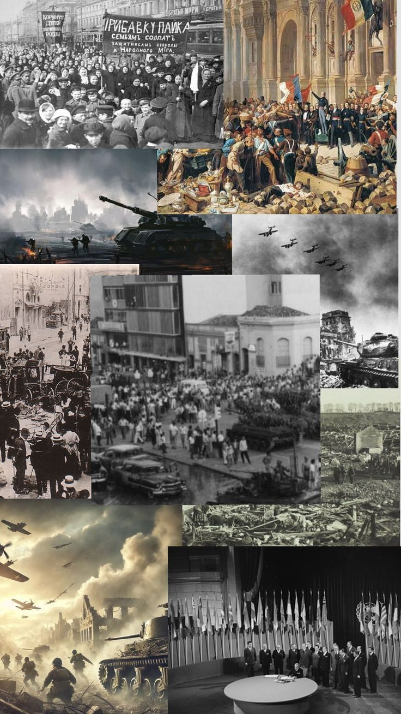

Philosophy since the mid-20th century — questioning grand narratives, probing the nature of mind and language in an age of computation, and still, after 2,500 years, asking what it means to live well.
Contemporary philosophy generally refers to philosophical developments from the mid-20th century to the present, although its boundaries remain deliberately flexible because many movements that became especially influential after 1945 had begun earlier. It developed in a world profoundly transformed by two world wars, the Holocaust, nuclear weapons, decolonization, the Cold War, rapid technological change, and the growing globalization of intellectual life. These events made questions about progress, reason, power, identity, language, science, and human responsibility more urgent than ever, while also challenging the assumption that philosophy could be organized around a single universal method or exclusively European intellectual tradition.
Rather than forming one unified school, contemporary philosophy expanded into a diverse landscape of overlapping traditions. Analytic philosophers developed increasingly sophisticated work in logic, language, metaphysics, epistemology, and the philosophy of mind; Continental thinkers investigated power, history, interpretation, subjectivity, and social structures; feminist, postcolonial, critical race, and other traditions challenged the exclusions built into older philosophical canons. At the same time, developments in computing, neuroscience, cognitive science, environmental studies, and artificial intelligence created entirely new philosophical problems that earlier generations could scarcely have imagined.
This page traces that continuing history across nine broad starting chapters: the challenge to universal narratives and fixed meanings associated with post-structuralism and postmodern thought; the growing importance of mind, language, consciousness, and cognition in an age shaped by computers and cognitive science; and the renewed development of ethics and political philosophy in response to inequality, technology, environmental crisis, global justice, and changing conceptions of human identity. Unlike earlier periods in the history of philosophy, contemporary philosophy has no completed historical boundary — its debates remain active, contested, and still being written.
Simone de Beauvoir publishes The Second Sex
Thomas Kuhn publishes The Structure of Scientific Revolutions
Jacques Derrida's early works help establish deconstruction
John Rawls publishes A Theory of Justice
Thomas Nagel publishes "What Is It Like to Be a Bat?"
Philosophy increasingly engages with globalization, neuroscience, digital technology, climate ethics, and artificial intelligence

The mid-20th century placed philosophy in a historical situation profoundly different from that of the nineteenth century. The First and Second World Wars, the Holocaust, totalitarian regimes, genocide, and the development of nuclear weapons forced philosophers to confront an uncomfortable question: how could societies possessing advanced science, technology, education, and political institutions also produce destruction on an unprecedented scale? For many thinkers, these events did not simply disprove the value of reason, but they seriously challenged the older belief that scientific and intellectual progress automatically produced moral or political progress. Reason itself increasingly became an object of philosophical criticism and investigation rather than an unquestioned instrument of human liberation.
This historical crisis encouraged new examinations of power, ideology, bureaucracy, technology, and social conformity. Thinkers associated with Critical Theory investigated how modern systems of communication, culture, economics, and administration could shape consciousness and reproduce forms of domination even within formally democratic societies. Other philosophers questioned the grand historical narratives that claimed history moved according to a single rational direction. The experience of the twentieth century made many philosophers increasingly suspicious of theories that presented one culture, political system, conception of reason, or model of human development as universally authoritative.
At the same time, decolonization across Africa, Asia, the Caribbean, and other regions transformed the intellectual landscape. Colonialism had not only involved political and economic domination; it had also shaped which traditions were recognized as philosophy and whose knowledge was treated as universal. Postcolonial thinkers therefore challenged Eurocentric accounts of history, identity, rationality, and civilization, while feminist philosophers exposed the ways supposedly universal accounts of humanity had often been constructed around male experience. Contemporary philosophy consequently became increasingly concerned with questions of voice, exclusion, identity, race, gender, culture, and the relationship between knowledge and social power.
Meanwhile, extraordinary developments in formal logic, computing, linguistics, neuroscience, and cognitive science opened new philosophical territory. Alan Turing's work on computation helped make the possibility of machine intelligence a serious philosophical question, while later research into the brain and cognition renewed debates about consciousness, personal identity, perception, and free will. If thought could be understood partly as information processing, philosophers asked, what distinguished human consciousness from computation? Could a machine genuinely think, understand, or possess subjective experience? These questions gradually moved from speculative possibilities into central debates in philosophy of mind and, eventually, artificial intelligence ethics.
Contemporary philosophy therefore developed not as a single movement but as an increasingly plural and interconnected field. Some philosophers continued the analytic search for conceptual clarity and logical precision, while others investigated history, interpretation, language, power, and lived experience. Political and ethical philosophy returned with renewed urgency to questions of justice, rights, democracy, global inequality, environmental responsibility, and technological power. It was against this backdrop — a world questioning inherited narratives, expanding beyond older philosophical boundaries, and confronting unprecedented scientific and technological change — that the diverse traditions of contemporary philosophy took shape.
Contemporary philosophy emerged from the intellectual transformations of the 20th century rather than from a single new philosophical movement. By the late twentieth century, the large systems that had once attempted to explain reality, history, consciousness, or society as a whole no longer dominated philosophy in the same way. Instead, the discipline became increasingly plural and specialized. Philosophers worked within distinct traditions and subfields, often concentrating on highly specific problems concerning language, knowledge, consciousness, ethics, politics, science, technology, and culture.
This development did not mean that the older traditions disappeared. Existentialism, phenomenology, Marxism, pragmatism, analytic philosophy, critical theory, feminism, and post-structuralism continued to influence contemporary debates. What changed was the intellectual landscape in which they operated. Philosophers increasingly borrowed ideas and methods across disciplinary boundaries, while the distinction between philosophical questions and questions investigated by psychology, linguistics, economics, computer science, biology, and neuroscience became less sharply defined.
The growing specialization of philosophy also produced a remarkable expansion of its subject matter. Philosophy of mind investigated consciousness alongside cognitive science; bioethics addressed questions created by modern medicine; environmental philosophy examined humanity's responsibilities toward nature; and political philosophy reconsidered justice in increasingly diverse and interconnected societies. New technologies created further questions about privacy, artificial intelligence, automation, and the power exercised through digital systems.
Contemporary philosophy also became increasingly aware of the historical limits of the traditional philosophical canon. For centuries, many standard histories of philosophy concentrated overwhelmingly on European thinkers. Late twentieth- and twenty-first-century scholarship increasingly challenged this narrow framework, bringing Indian, Chinese, African, Islamic, Indigenous, Latin American, and other intellectual traditions into wider philosophical conversation. This did not create a single global philosophy, but it significantly changed debates about whose ideas count as philosophy and how philosophical history should be written.
As a result, contemporary philosophy is best understood not as one unified school but as a diverse intellectual field connected by recurring questions. What can human beings know? What is consciousness? What makes an action right or wrong? What is justice? How should societies respond to new technologies and environmental crises? These questions are ancient, but the conditions under which they are now asked are profoundly new.
The history of contemporary philosophy is therefore also the history of a discipline learning to operate without a single dominant method or worldview. Some philosophers continue to pursue logical precision and systematic argument, while others emphasize historical interpretation, lived experience, social critique, or dialogue between cultures. This diversity can make contemporary philosophy appear fragmented, but it also reflects the complexity of the modern world it seeks to understand.
Analytic philosophy remained one of the most influential traditions in English-speaking universities throughout the late twentieth and early twenty-first centuries. Its earlier development had emphasized formal logic and the analysis of language, particularly through thinkers such as Frege, Russell, Moore, and Wittgenstein. Contemporary analytic philosophy inherited this concern for clarity and rigorous argument but expanded far beyond its original focus on whether philosophical problems could be solved through linguistic analysis alone.
One important development was the renewed study of metaphysics. Earlier twentieth-century philosophers had sometimes regarded metaphysical questions with suspicion, especially within logical positivism. Later analytic philosophers returned to questions about existence, identity, possibility, causation, time, and the nature of reality. Modal logic and the philosophical analysis of possible worlds became important tools for investigating what could have been different and what must be true in every possible situation.
Epistemology also developed in new directions. Philosophers continued to ask what knowledge is and how beliefs can be justified, but they increasingly examined problems involving skepticism, testimony, disagreement, social knowledge, and the reliability of cognitive processes. The traditional image of a solitary individual trying to prove the existence of the external world was supplemented by questions about how knowledge is produced collectively through institutions, experts, scientific communities, and social practices.
Philosophy of language likewise moved beyond its early concern with logical form. Contemporary philosophers investigated reference, meaning, interpretation, metaphor, communication, and the relationship between language and thought. Thinkers such as Saul Kripke challenged earlier assumptions about how names and necessity function, helping to reshape both philosophy of language and metaphysics. These debates demonstrated that apparently technical questions about words could have major consequences for understanding reality itself.
Contemporary analytic philosophy is therefore defined less by a fixed list of doctrines than by a style of philosophical inquiry. Careful argument, conceptual precision, engagement with logic, and close examination of objections remain central ideals. At the same time, the tradition has become increasingly diverse, addressing ethics, politics, feminism, race, consciousness, science, religion, and technology alongside its more traditional subjects.
The boundaries between analytic and other philosophical traditions have also become less absolute than they once appeared. Although important differences in style and method remain, contemporary philosophers increasingly engage with problems that cannot be confined to one intellectual tradition. The result is an analytic philosophy that remains committed to argumentative rigor while participating in a much wider philosophical landscape.
The study of the mind became one of the central areas of contemporary philosophy. Ancient and early modern philosophers had long asked about the relationship between mind and body, but developments in psychology, neuroscience, linguistics, and computer science gave these questions a new scientific context. Philosophers of mind increasingly investigated consciousness, perception, intentionality, memory, personal identity, and the relationship between mental states and physical processes in the brain.
One major debate concerned physicalism: the view that mental phenomena are, in some fundamental sense, dependent upon the physical world. If thoughts, emotions, and perceptions arise from brain processes, philosophers asked, how should consciousness itself be explained? Some theories attempted to identify mental states directly with physical brain states, while others argued that the same mental function could potentially be realized in different physical systems.
Functionalism became particularly influential in this context. According to functionalist approaches, a mental state may be understood partly through the role it plays within a system rather than solely through the material from which that system is made. This idea created important connections between philosophy of mind and computer science, raising the possibility that artificial systems might perform functions traditionally associated with human cognition.
Yet consciousness remains one of philosophy's deepest unresolved problems. A scientific explanation may describe how the brain processes information, but philosophers continue to ask why some physical processes are accompanied by subjective experience at all. What is it like to see a color, feel pain, or experience the passage of time? This distinction between describing cognitive functions and explaining subjective experience continues to shape contemporary debates about the so-called hard problem of consciousness.
Cognitive science has also transformed philosophical discussions of human reasoning. Research into perception, language, memory, and decision-making suggests that human cognition is neither perfectly rational nor completely transparent to itself. Philosophers now examine cognitive biases, embodied cognition, extended forms of mind, and the possibility that thinking depends not only on the brain but also on the body, social environment, and technological tools with which human beings interact.
These debates became even more urgent with the development of increasingly sophisticated artificial intelligence. Can a machine genuinely understand, think, or become conscious, or can it merely simulate the outward behavior associated with intelligence? Contemporary philosophy of mind therefore stands at the intersection of some of the most important questions of the twenty-first century: what makes a mind a mind, what consciousness is, and whether intelligence must necessarily be biological.
Contemporary political philosophy returned with particular force to the question of justice. The political catastrophes of the twentieth century, including world wars, totalitarian regimes, colonial violence, and ideological conflict, raised urgent questions about the legitimate limits of state power and the moral foundations of political institutions. Philosophers increasingly asked how free and diverse societies could distribute rights, opportunities, wealth, and political authority fairly.
John Rawls became one of the most influential figures in this revival with his theory of justice as fairness. In A Theory of Justice (1971), Rawls introduced the thought experiment of the "original position," in which individuals choose principles of justice without knowing their own social class, wealth, abilities, gender, or position in society. The purpose was to identify principles that could be considered fair because they were not chosen to benefit a particular group.
Rawls's work generated powerful responses from many directions. Libertarian philosophers such as Robert Nozick defended stronger rights of individual ownership and questioned extensive redistributive policies. Communitarian thinkers argued that liberal theories sometimes treated individuals too abstractly, neglecting the importance of communities, traditions, and shared identities. Feminist, postcolonial, and critical theorists further challenged political philosophy to consider forms of inequality that older theories had often overlooked.
Contemporary political philosophy also expanded beyond the boundaries of the nation-state. Globalization raised questions about international inequality, migration, refugees, war, human rights, and the responsibilities wealthy societies may have toward people beyond their borders. Philosophers debated whether principles of justice should apply primarily within political communities or whether global institutions should be evaluated according to more universal standards.
Democracy itself became a major subject of philosophical investigation. Contemporary thinkers ask what genuine political participation requires, whether citizens can make informed decisions in complex technological societies, and how democratic institutions should respond to misinformation, economic inequality, and concentrated power. The rise of digital communication has added new questions about political polarization and the influence of algorithms on public debate.
Contemporary political philosophy therefore continues the Enlightenment concern with freedom and legitimate authority while confronting problems the eighteenth century could not have anticipated. Its central challenge is not simply to describe political institutions but to determine how societies containing deep moral, cultural, and economic differences can nevertheless create institutions that are free, just, and politically legitimate.
One of the most important developments in contemporary philosophy has been the rapid growth of applied ethics. Rather than limiting ethical inquiry to abstract questions about the nature of right and wrong, applied philosophers examine difficult practical decisions arising in medicine, business, technology, law, war, environmental policy, and everyday life. These fields demonstrate that philosophical reasoning remains deeply relevant whenever societies must decide what they ought to do.
Bioethics became especially significant as advances in medicine created possibilities that earlier generations had never faced. Organ transplantation, life-support technology, genetic testing, reproductive medicine, and new forms of medical research raised difficult questions about consent, autonomy, death, suffering, and the limits of professional authority. Philosophers work alongside doctors, scientists, lawyers, and policymakers to examine the moral principles involved in these decisions.
Questions surrounding the beginning and end of human life remain among the most contested areas of bioethics. Debates concerning abortion, euthanasia, physician-assisted dying, and reproductive technologies involve fundamental disagreements about personhood, bodily autonomy, human dignity, and the value of life. Philosophy does not eliminate these disagreements, but it attempts to make their underlying assumptions explicit and subject them to careful argument.
Animal ethics also transformed contemporary moral philosophy. Traditional ethical theories had often focused almost exclusively on obligations among human beings, but philosophers increasingly questioned whether the capacity to suffer, possess interests, or experience life should have moral significance. These discussions influenced debates about animal experimentation, industrial farming, diet, conservation, and the moral boundaries between humans and other animals.
Applied ethics has also challenged the idea that philosophy should remain detached from public life. Ethical reasoning increasingly appears in hospitals, government committees, research institutions, corporations, and international organizations. Philosophers contribute not by providing automatic answers but by clarifying values, identifying hidden assumptions, distinguishing competing principles, and examining whether proposed solutions can be morally justified.
The growth of applied ethics reflects a broader transformation in contemporary philosophy. Philosophical questions are no longer treated only as timeless intellectual puzzles; they are also recognized as practical problems arising from the power human beings now possess to alter bodies, societies, ecosystems, and technologies. The question "What should we do?" has become inseparable from many of the defining challenges of the modern world.
Environmental philosophy developed as philosophers increasingly recognized that traditional ethical theories often treated nature primarily as a resource for human use. Industrialization, pollution, species extinction, and climate change forced a reconsideration of humanity's relationship with the natural world. If human actions can transform entire ecosystems and affect generations yet unborn, philosophers asked, what responsibilities do human beings have toward animals, species, landscapes, and the planet as a whole?
A central debate concerns anthropocentrism — the view that human beings are the primary or only source of moral value. Environmental philosophers have challenged this assumption in several ways. Some argue that individual animals possess moral standing because they can suffer or flourish. Others defend the value of species, ecosystems, or the natural world independently of their usefulness to human beings.
Deep ecology and related movements argued for a more radical transformation of human attitudes toward nature. Rather than seeing humanity as separate from the environment, these approaches emphasize ecological interconnectedness and question the assumption that endless economic growth should automatically take priority over ecological stability. Such ideas have generated debate about whether environmental ethics requires entirely new moral concepts or can be developed from existing ethical traditions.
Climate change has made these philosophical questions increasingly urgent. The causes and consequences of environmental damage are distributed across different countries and generations, making responsibility unusually difficult to assign. Those who contribute least to climate change may suffer some of its most severe effects, while future generations will live with decisions made long before they are able to participate in them.
Environmental justice adds another dimension by examining how environmental harms are distributed socially. Pollution, resource extraction, and climate risks often affect poorer and politically marginalized communities disproportionately. Philosophical discussions of the environment therefore intersect with questions about economic inequality, colonial history, political power, and global justice.
Environmental philosophy ultimately challenges one of the deepest assumptions of modern civilization: that human progress can be understood independently of the ecological systems that make human life possible. It asks whether freedom, prosperity, and technological development must be reconsidered when humanity possesses the power to alter the conditions of life on a planetary scale.
Technology has become one of the defining subjects of contemporary philosophy because modern technologies do far more than provide useful tools. They shape how people communicate, work, learn, remember, form relationships, and understand themselves. Philosophers of technology ask whether technologies are merely neutral instruments controlled by their users or whether technological systems themselves influence the possibilities available to human beings.
Digital technology has intensified these questions. Search engines, social media platforms, recommendation systems, and algorithmic decision-making increasingly influence what information people encounter and how institutions classify individuals. This raises philosophical concerns about privacy, surveillance, autonomy, manipulation, responsibility, and the concentration of power in technological systems that may be difficult for ordinary users to understand or challenge.
Artificial intelligence has brought older philosophical questions about mind and knowledge into direct contact with practical technological development. Can an artificial system genuinely reason or understand, or does it merely produce behavior that appears intelligent? If increasingly autonomous systems make decisions affecting employment, healthcare, law, or warfare, who is morally responsible when those decisions cause harm?
AI also raises questions about bias and fairness. Algorithms are trained, designed, and deployed within human societies that already contain inequalities and historical prejudices. A system may therefore reproduce or amplify existing patterns even when it appears mathematically objective. Philosophers examine not only whether an AI system functions efficiently, but also what values are built into its objectives and who has the authority to determine those values.
More speculative debates concern the future relationship between humans and intelligent machines. Some philosophers investigate whether artificial consciousness could ever be possible and what moral status a genuinely conscious machine might possess. Others focus on automation, human enhancement, biotechnology, and the possibility that technological change could alter fundamental assumptions about work, identity, and human nature.
Philosophy of technology therefore asks a question that extends far beyond individual devices: what kind of world are human beings creating through their technologies? As technological systems become more powerful and deeply integrated into everyday life, philosophical reflection becomes essential for deciding not merely what can be built, but what should be built and under what ethical and political conditions.
Postcolonial and decolonial philosophy examine the enduring intellectual, political, and cultural consequences of colonialism. European empires did not merely control territories and economies; they also shaped systems of knowledge that frequently presented European concepts and institutions as universal while treating other cultures as peripheral, irrational, or less developed. Contemporary philosophers have therefore asked how colonial power influenced the categories through which history, identity, reason, and knowledge have been understood.
Postcolonial thought investigates the relationship between political domination and cultural representation. Colonial societies were often described through categories created by those who governed them, and these descriptions could persist long after formal colonial rule ended. Philosophical critique therefore examines who has the power to define cultures, whose voices are considered authoritative, and how systems of knowledge can exclude or marginalize particular experiences.
Decolonial approaches place particular emphasis on the continuing structures of colonial power in the modern world. Political independence did not always remove economic dependency, cultural hierarchy, or intellectual systems that privileged certain traditions over others. Decolonial philosophers therefore question whether genuine intellectual pluralism requires more than simply adding non-European thinkers to an existing canon; it may also require reconsidering the categories through which philosophy itself is organized.
These movements have encouraged renewed engagement with philosophical traditions from Africa, Asia, Latin America, and Indigenous cultures. Importantly, this project is not simply an attempt to replace one universal tradition with another. It raises a deeper question about whether philosophy should assume that every intellectual tradition must fit the categories developed within modern European thought in order to count as philosophy.
Postcolonial and decolonial philosophy also intersect with questions about race, migration, identity, language, gender, and economic inequality. Historical systems of domination continue to influence contemporary institutions, and philosophical analysis attempts to understand how these structures shape both individual experience and collective political life.
The broader importance of these approaches lies in their challenge to philosophy's own self-understanding. They ask whether a discipline devoted to questioning assumptions should also question the historical boundaries of its canon. In doing so, they have helped make contemporary philosophy more attentive to the relationship between knowledge and power, and to the possibility that philosophical dialogue must become genuinely global rather than merely international in appearance.
Contemporary philosophy increasingly recognizes that profound philosophical traditions developed across the world. Indian philosophy produced extensive debates about consciousness, knowledge, language, liberation, and reality; Chinese traditions developed influential approaches to ethics, political order, harmony, and self-cultivation; Islamic philosophers preserved, transformed, and developed major traditions of logic and metaphysics; and African and Indigenous intellectual traditions contain rich reflections on community, personhood, knowledge, and humanity's relationship with nature.
Cross-cultural philosophy seeks to place these traditions into serious dialogue without assuming that one tradition provides the universal standard by which all others must be judged. This is a difficult task. Philosophical concepts do not always have exact equivalents across languages and cultures, and ideas can be distorted when they are forced into unfamiliar categories. Genuine dialogue therefore requires both comparison and careful attention to historical and linguistic context.
Comparative philosophy can reveal both similarities and important differences. Questions about the self, for example, appear in many traditions, but different philosophers may understand the self as an independent individual, a changing process, a relational being, or an expression of a deeper metaphysical reality. Comparing these approaches can expose assumptions that remain invisible when a thinker studies only one intellectual tradition.
Global philosophical dialogue has also become increasingly important because many contemporary problems are themselves global. Climate change, technological transformation, economic inequality, migration, and political conflict cannot be adequately understood from a single national or cultural perspective. Different philosophical traditions may offer distinct concepts of responsibility, community, nature, and human flourishing that contribute to wider debates.
At the same time, global philosophy must avoid turning intellectual traditions into simple collections of interchangeable ideas. Philosophical traditions emerge from particular histories and cannot be understood merely by extracting isolated concepts from them. The goal is therefore not to create an artificial mixture in which all differences disappear, but to develop forms of dialogue in which traditions can challenge and enrich one another.
The increasing importance of cross-cultural philosophy represents one of the most significant transformations of the contemporary discipline. It suggests that the future history of philosophy may no longer be written as a story moving primarily from ancient Greece through Europe and North America. Instead, philosophy is increasingly understood as a global human activity with multiple histories, methods, languages, and intellectual centers.
Philosophy today exists in a world transformed by scientific discovery, digital technology, globalization, and environmental crisis. The discipline has become more specialized than at almost any earlier point in its history, yet many of its oldest questions remain unresolved. What is knowledge? What is consciousness? What is a good life? What makes political authority legitimate? The persistence of these questions suggests that philosophical progress does not always take the form of permanently solving a problem; it can also involve discovering new dimensions of the problem itself.
Artificial intelligence and biotechnology may become especially important philosophical challenges in the coming decades. As humans develop systems capable of increasingly complex forms of reasoning and technologies capable of altering bodies and genetic inheritance, traditional concepts of person, intelligence, autonomy, and responsibility may require reconsideration. Philosophers will be required to examine not only the capabilities of these technologies but the values that should guide their development.
Environmental change presents another challenge that cannot be addressed by science alone. Scientific research can describe climate systems and predict possible consequences, but decisions about responsibility, sacrifice, justice, and obligations to future generations are fundamentally normative. Philosophy therefore remains essential wherever facts must be connected to questions about what human beings ought to value and how they ought to act.
The future of philosophy will also depend on its relationship with other disciplines. Neuroscience can investigate the brain, but philosophical questions remain about consciousness and explanation. Economics can model social behavior, but it cannot by itself determine what constitutes a just distribution of resources. Artificial intelligence can process enormous quantities of information, but questions about meaning, value, and moral responsibility cannot simply be reduced to computational efficiency.
Some philosophers worry that increasing specialization may fragment the discipline into technical fields unable to communicate with one another. Others see specialization as a necessary response to the growing complexity of human knowledge. The continuing challenge is to preserve philosophy's ability to connect questions across disciplines while maintaining the rigor required for serious investigation.
Contemporary philosophy is therefore not the end of philosophical history but an ongoing experiment in how human beings should think about themselves and their world. Its future will be shaped by problems that are already visible and by questions that have not yet emerged. As long as human beings continue to ask what is true, what is real, what is just, and what kind of future ought to be created, philosophy will remain an unfinished and necessary part of human intellectual life.
The key figures behind each chapter of this era, in brief.
Applied Existentialist freedom to analyze the social construction of gender in The Second Sex.
Examined how power operates through institutions, knowledge, and discourse.
Influential philosopher of gender and identity whose work examines performativity, power, social norms, and the formation of the self.
Major contemporary ethicist known for utilitarian arguments concerning animal liberation, global poverty, and effective altruism.
Explored identity, recognition, secularism, and the historical development of the modern understanding of the self.
Developed deconstruction, examining how texts contain tensions, assumptions, and unstable systems of meaning.
Developed influential work in ethics, political philosophy, emotions, justice, and the Capabilities Approach to human flourishing.
Developed a philosophy of difference, becoming, desire, and multiplicity that challenged traditional ideas of identity and fixed systems.
Major moral philosopher who criticized overly systematic ethical theories and emphasized integrity, practical reason, and moral complexity.
Simone de Beauvoir
Michel Foucault
John Rawls
Thomas Kuhn
Jean-Paul Sartre
Contemporary philosophy remains genuinely divided along many of the same lines this page has traced — Analytic philosophy's emphasis on precision, argument, and often close engagement with science continues to dominate philosophy departments across much of the English-speaking world, while Continental philosophy's engagement with history, power, language, and lived experience remains influential in literature, cultural theory, and philosophy departments elsewhere, particularly in Europe and Latin America. Rather than one tradition simply winning, both continue to develop, increasingly aware of and occasionally in direct conversation with each other.
Perhaps the most significant recent development is philosophy's deepening engagement with genuinely new problems that no earlier era could have directly confronted: the ethical and metaphysical questions raised by artificial intelligence, the moral urgency of climate change and long-term thinking about future generations, and sustained efforts to genuinely globalize philosophy by taking African, Indigenous, Latin American, and other traditions seriously as philosophy in their own right, rather than treating the Western tradition covered across most of this site as the sole reference point. In this sense, the questions first raised by Thales in Miletus and the sages of the Upanishads are still very much alive — just extended, now, into territory none of them could have anticipated.
Time Period: c. 1945 CE – present
Key Region: Global — France, the United States, and increasingly worldwide
Major Movements: Postmodernism, Philosophy of Mind, Contemporary Political Philosophy
Central Question: How should philosophy respond to a world its earlier traditions never anticipated?
Successor Traditions: None yet — this chapter is still being written
This closes the historical arc traced across all nine eras on this site — from myth-bound Ancient Greece to a philosophical present that is, quite literally, still unfolding. The questions raised along the way haven't stopped being asked; explore how they're organized today across the branches and schools of philosophy, or meet the individual thinkers, ancient and modern, who carried this story forward.